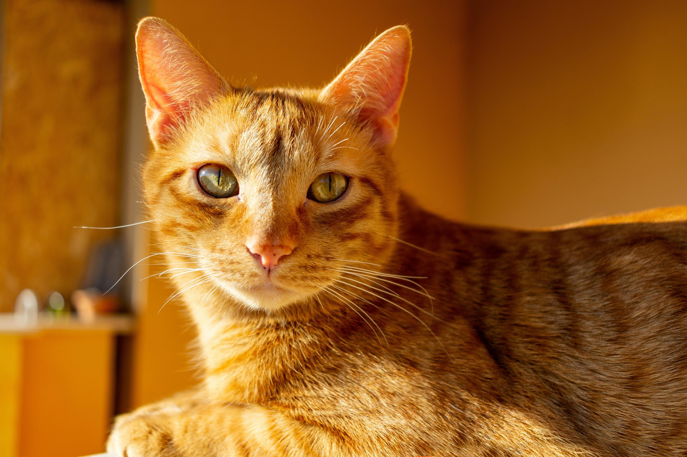
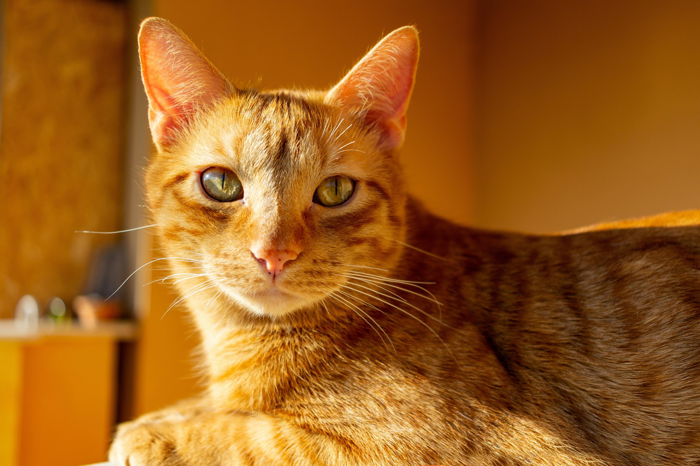

Maison Cat Café is more than a café, we are a community dedicated to the well-being of cats. Our caring staff partners with local animal shelters to help rescue cats find safe, loving forever homes.
Looking to add a furry companion to your family? Visit Maison Cat Café to meet our adoptable cats in a relaxed, welcoming environment. Learn about each cat’s personality, the adoption process, and how you can provide a loving home. Every visit supports our mission to give cats a second chance and a place to belong.
We proudly partner with trusted shelters to help cats find loving homes.
Best Friends NYC is dedicated to saving cats and kittens across NYC.
Visit Shelter